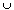
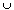

In both cases the space is:
In both cases the space is:and we get a one-one correspondence by mapping the points to the corresponding points on the square.
 We start with a cylinder:
We start with a cylinder: Identifying the "bottom ring" to a point gives a cone:
Identifying the "bottom ring" to a point gives a cone:which is homeomorphic to a disc.
 Identifying both top and bottom to a single point gives a space like:
Identifying both top and bottom to a single point gives a space like: Identifying a "middle ring" to a single point gives a kind of "double cone":
Identifying a "middle ring" to a single point gives a kind of "double cone": Y is either a point of X or a point of Y -- except for x
Y is either a point of X or a point of Y -- except for x  X, y Y which map to the same point of X  Y/~.
X, y Y which map to the same point of X  Y/~.So we may map points in X - {x} to X
 {y} in X Y, points in Y - {y} to {x} Y in X Y and map the common point to (x, y) X Y and verify that this is a homeomorphism.
{y} in X Y, points in Y - {y} to {x} Y in X Y and map the common point to (x, y) X Y and verify that this is a homeomorphism.
To get S1  S1 start by identifying the top and bottom of the cylinder (see Question 2 above) to get a torus S1 S1.
S1 start by identifying the top and bottom of the cylinder (see Question 2 above) to get a torus S1 S1.
 Then S1 S1 is a pair of circles.
Then S1 S1 is a pair of circles.
 Shrinking one of them down to a point gives the space in the last part of Question 2. Then shrink the second circle down to the point to get a sphere.
Shrinking one of them down to a point gives the space in the last part of Question 2. Then shrink the second circle down to the point to get a sphere.
R can be written as n + f with n Z and f (0, 1). So the interval (0, 1) maps to the whole of R/~. Similarly for any other open interval.
The open sets of the identification topology are the images of open sets in R. Since any non-empty open set of R contains an open interval, it will map to the whole of R/~. Hence R/~ (which is an uncountable set and hence can be put into one-one correspondence with R) has only itself and
 as open sets.
as open sets.Thus, up to homeomorphism, it is the same as R with the trivial topology.
Reversing the twist on one of the strips gives a surface with two unlinked circles as boundary. This is an ordinary cylinder in R3.
The space B is trickier. Its boundary is a single circle in R3 which happens to be knotted.
Unlikely as it may seem, B is a torus with a disc removed to make a hole.
To see this, snip two of the twisted strips:  and convince yourself that this is the same as a torus with a hole:
and convince yourself that this is the same as a torus with a hole:

Reversing a twist makes no difference (think how the identifications are made) while if one of the strips is untwisted A is a Mobius band and B is a cylinder with a hole.